Kinetic Facade Installation
Learning Outcomes:
- Explore building facade as responsive skin
- Identify installation representation
- Fabricate prototype
Objectives
Architecture has a long tradition of struggling with defining the concept of form verses function. In the recent decade or so, we have seen the up-rise of sustainable buildings focusing on maximizing efficiency of buildings through green technology such as green walls or roof etc. but yet retaining either the traditional architectural forms or the design development processes. Today, we are experiencing different sustainable approaches ranging from responsive parametric architecture to Building Information Modelling (BIM) softwares focusing on building productivity and performance. Currently, much emphasis had been placed on creating adaptive skin over the envelope of buildings that would react to climatic changes via sensors. These approaches disrupt the traditional way of designing as it takes into account of manoeuvrable parts and highly complex organic forms that were once considered near impossible in construction.
Design Intent
The development of this project, based on adaptive surface/ facade, wrapped around the idea of maneuvering modular components through the use of sensors. The direct application for such system can be implemented on building facades where it shades or opens up like an umbrella, enhancing the overall climatic efficiency according to the surrounding environment. Below are links to references of influential projects and images of study facade models.
| Shape Shifting Architecture Flexible modular components |
||
| 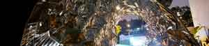 |
Thermal Metal Surfaces Responsive bi-metal application |
|
| 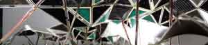 | Phototropia Electro-active polymer, bio-plastics solar cells |
|
| 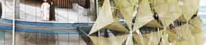 | Al Bahar Towers Responsive modular facade |
Design Strategy
The Kinetic Facade Installation will emcompass a layer of skin over modular skeletal frame. It will be produced as a small scale prototype, more like an installation, with suggestive materials. The skin, which is essentially a sheet of PVC ( transparency) film, will fold or unfold depending on the amount of light received by the phototransistor. In the context of an actual building project, the PVC film acts like a canopy or foldable mechanism. The modules can be stacked up to form a wall or potentially a design proposal for architectural facades. Below is an illustration of the general principles behind the design concept.
Rhino file: Download
|
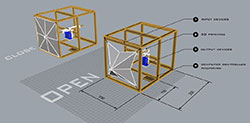 |
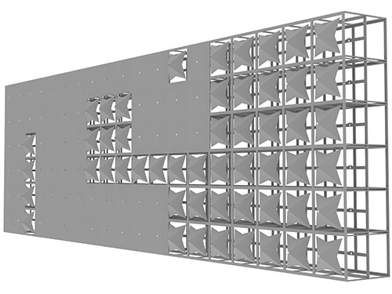 |
|
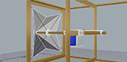 |
|
|
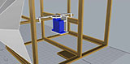 |
{kind=link}
{kind=link}
{kind=link}
{kind=link}
Design Development
- Press-fit Design
- Computer Controlled Cutting
- Electronics
- Programming
- GUI
- Installation
Details on project schedules and cost projection: Schedule
Details on plans for project dissemination: Dissemination Method
1. Press-fit Design
Rhino linked files:
Milling: Download
Connector: Download
Connector Modified: Download
Connector Slot: Download
Connector Slot Modified.3dm: Download
One of the main objectives of designing the modular frame for the kinetic facade prototype was to ensure that it is, first and foremost, modular and repeatable. It should also possess capability to form organic shapes to suit variable conditions.
Attempt 01
Inspired by Henry Skupniewicz's press-fit construction design, the concept of the modular skeletal frame wrapped around the idea of a singular module multiplied to created a larger whole. It is essentially a three-sided component designed to connect with another module by means of press-fit slots. The 3D model was completed using Rhino and the press-fit slots were created parametrically for milling using referencing method demonstrated during week 3.
|
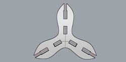 |
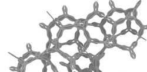 |
|
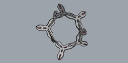 |
|
|
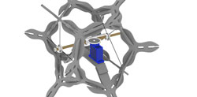 |
{kind=link}
{kind=link}
{kind=link}
{kind=link}
Attempt 02
The module was further modified with an additional slot at the centre to allow for intermediate support. This would allow housing of the servo possible at the centre of the skeletal frame. This also made the overall module bigger.
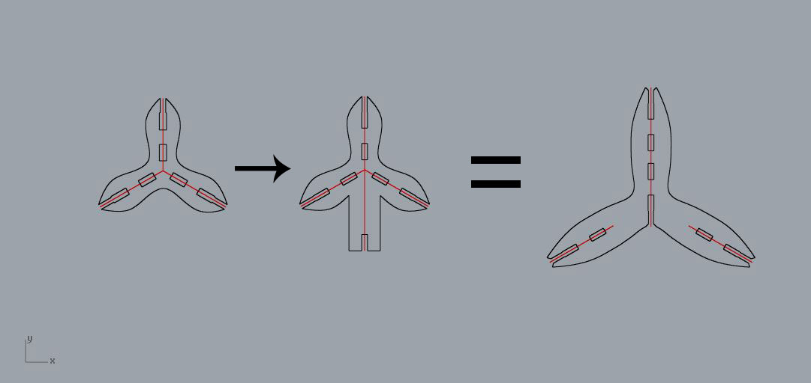
2. Computer Controlled Cutting
The module design was milled using Epilog Engraver Fusion Laser Cutter and it took
a few trials before a final successful cut was made. Here are the final
milling configurations:
*Speed 8% *Power 90% *Frequency 50%
Ensure that the following are checked in the Epilog program:
- To access, click print ( in drawing software like corel draw) and go to preference
- Under options- Centre-Engraving
- Under default settings- Thickness = 3mm
Attempt 01
|
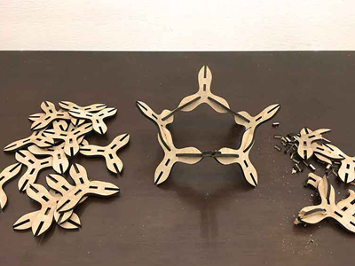 |
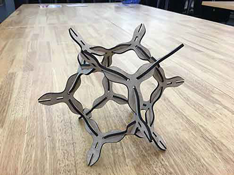 |
|
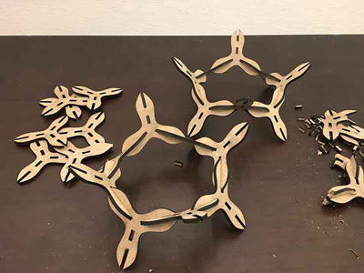 |
|
|
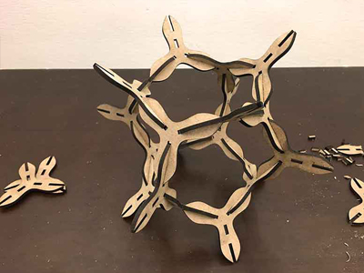 |
{kind=link}
{kind=link}
{kind=link}
{kind=link}
Attempt 02
|
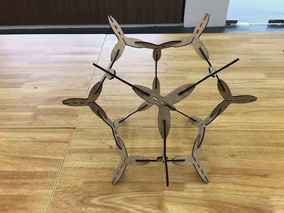 |
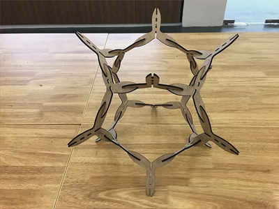 |
|
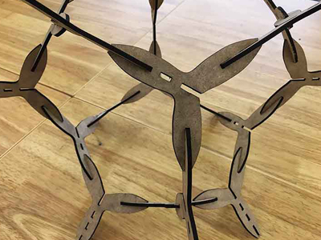 |
|
|
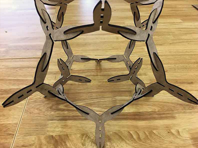 |
{kind=link}
{kind=link}
{kind=link}
{kind=link}
3. Electronics
Eagle files (modified version): PhotoResistor Board PhotoResistor Schematics
The main objective for the electonics component is to ensure that the
photoresistors are able to send signal to the servos. The servos should
move in one direction when signal is high and move in the opposite direction
when signal is low. For the Kinetic Facade Installation, 2 photoresistors and
2 servos was catered for in the microcontroller design. Here are the
components and schemetics design.
Attempt 01
| Unit | Materials/ Components | Schematics/ Board Design |
| 2 | Servos |
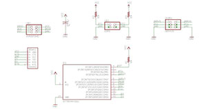
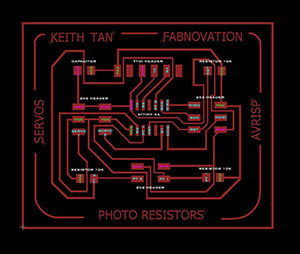 |
|
1 |
USB to FDTI board |
|
|
1 1 1 1 1 1 3 1 2 1 |
Microcontroller Board: 2x3 pin header for programming ATtiny44 FTDI Header 2x3 pin header for servos 2x2 pin header for LDR FTDI Header Resistor (10k) Capacitor (1uf) LDR Photoresistors PCB Copper Board |
{kind=link}
{kind=link}
PCB Milling
Miller model: PCB2020b
Here are the milling settings:
- Width 800
- Depth -0.18
- Depth -0.127
- WDepth -0.2794
- Minimum 0.12
- not used 0.508
- not used 0.127
For more details on milling process, refer to:
Week 06
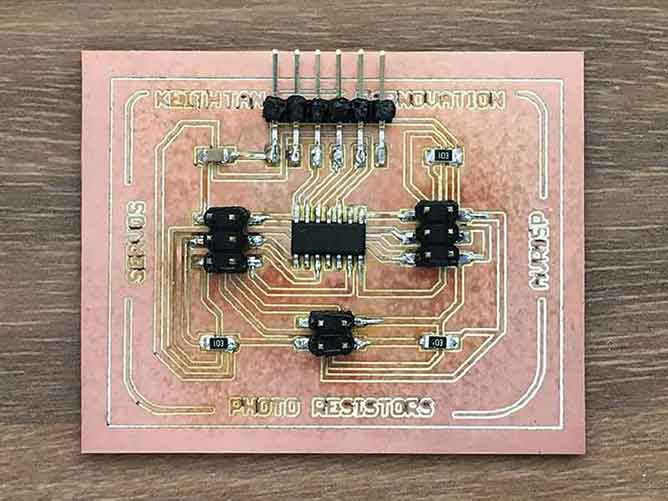
Attempt 02
The second attempt was carried out due to error in both Servo 2 pin and Photo Resistor 1 pin (PT1) location. Servo 2 was wired to PB0 which does not support PWM output for a ATtiny 44 (refer to middle image below from pighixxx.com) while Photo Resistor 1 pin was wired to PB1 which does not support ADC (Analog to Digital Convertor). To correct the mis-wired pots:
- The trace for Photo Resistor 1 (indicated as PT1 in the schematic design) was re-soldered by means of using wire-cable to create connectivity. The original trace for PT1 was cut using pen knife to disconnect.
- The Servo 2 pin was re-activated by using c-coding and bit-banging using Arduino IDE.
| 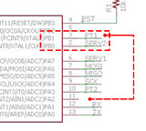 | 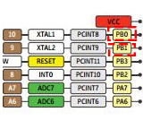 |
 |
{kind=link}
{kind=link}
4. Programming
Bit_Banging.ino file: Download
Phototransistor_Servo.ino file: Download
As stated above, 2 methods were attempted to complete the programming:
- C Coding (Work-in-progress)
- Bit Banging (successful)
Attempt 01
C Code
Below is c code adapted from Fabacademy's hello.reflect and hello.servo boards for driving servo via input from photo sensor. It is currently able to complete compilation and even successfully send to ATtiny 44 but there were no reactions from the servo.// hello.reflect.servo.44.2.c // // light reflection synchronous detection hello-world // 9600 baud FTDI interface // // Neil Gershenfeld // 10/25/12 // // (c) Massachusetts Institute of Technology 2012 // This work may be reproduced, modified, distributed, // performed, and displayed for any purpose. Copyright is // retained and must be preserved. The work is provided // as is; no warranty is provided, and users accept all // liability. // // // Modified by Keith Tan. FABnovation*** // Added code for servo outputs // 14/6/16 // #include#include #define output(directions,pin) (directions |= pin) // set port direction for output #define set(port,pin) (port |= pin) // set port pin #define clear(port,pin) (port &= (~pin)) // clear port pin #define pin_test(pins,pin) (pins & pin) // test for port pin #define bit_test(byte,bit) (byte & (1 << bit)) // test for bit set #define bit_delay_time 102 // bit delay for 9600 with overhead #define bit_delay() _delay_us(bit_delay_time) // RS232 bit delay #define half_bit_delay() _delay_us(bit_delay_time/2) // RS232 half bit delay #define char_delay() _delay_ms(10) // char delay #define position_delay() _delay_ms(1000) // PWM delay*** //Define T44 to Computer (FTDI) pin*** #define serial_port PORTA #define serial_direction DDRA #define serial_pin_out (1 << PA1) //Define PWM pins*** #define PWM_port PORTA #define PWM_direction DDRA #define PWM_pin_0 (1 << PA7) #define PWM_pin_1 (1 << PB0) #define nloop 100 // Sensor- number of loops to accumulate #define loop_count 30 // PWM- number of loops to accumulate*** void put_char(volatile unsigned char *port, unsigned char pin, char txchar) { // // send character in txchar on port pin // assumes line driver (inverts bits) // // start bit // clear(*port,pin); bit_delay(); // // unrolled loop to write data bits // if bit_test(txchar,0) set(*port,pin); else clear(*port,pin); bit_delay(); if bit_test(txchar,1) set(*port,pin); else clear(*port,pin); bit_delay(); if bit_test(txchar,2) set(*port,pin); else clear(*port,pin); bit_delay(); if bit_test(txchar,3) set(*port,pin); else clear(*port,pin); bit_delay(); if bit_test(txchar,4) set(*port,pin); else clear(*port,pin); bit_delay(); if bit_test(txchar,5) set(*port,pin); else clear(*port,pin); bit_delay(); if bit_test(txchar,6) set(*port,pin); else clear(*port,pin); bit_delay(); if bit_test(txchar,7) set(*port,pin); else clear(*port,pin); bit_delay(); // // stop bit // set(*port,pin); bit_delay(); // // char delay // bit_delay(); } int main(void) { // // main // //Sensor*** static char chr; //PWM*** static uint8_t i; static uint16_t on,off; // // // set clock divider to /1 // CLKPR = (1 << CLKPCE); CLKPR = (0 << CLKPS3) | (0 << CLKPS2) | (0 << CLKPS1) | (0 << CLKPS0); // // initialize output pins // set(serial_port, serial_pin_out); output(serial_direction, serial_pin_out); set(PWM_port, PWM_pin_0); output(PWM_direction, PWM_pin_0); set(PWM_port, PWM_pin_1); output(PWM_direction, PWM_pin_1); // // // // init A/D*** // ADCSRA = (1 << ADEN) // enable | (1 << ADPS2) | (1 << ADPS1) | (1 << ADPS0); // prescaler /128 // // main loop // while (1) { // //Select A/D Channel 1*** ADMUX = (0 << REFS1) | (0 << REFS0) // Vcc ref | (0 << ADLAR) // right adjust | (0 << MUX5) | (0 << MUX4) | (0 << MUX3) | (0 << MUX2) | (1 << MUX1) | (0 << MUX0); // ADC2 (Pin PA2)*** // // start conversion*** // ADCSRA |= (1 << ADSC); // // wait for completion // while (ADCSRA & (1 << ADSC)) ; // // send/read result 1 // chr = ADCL; put_char(&serial_port, serial_pin_out, chr); char_delay(); chr = ADCH; put_char(&serial_port, serial_pin_out, chr); char_delay(); // // save result // off += ADC; // // //Select A/D Channel 2*** ADMUX = (0 << REFS1) | (0 << REFS0) // Vcc ref | (0 << ADLAR) // right adjust | (0 << MUX5) | (0 << MUX4) | (0 << MUX3) | (0 << MUX2) | (1 << MUX1) | (1 << MUX0); // ADC3 (Pin PA3)*** // // start conversion*** // ADCSRA |= (1 << ADSC); // // wait for completion // while (ADCSRA & (1 << ADSC)) ; // // send/read result 1 // chr = ADCL; put_char(&serial_port, serial_pin_out, chr); char_delay(); chr = ADCH; put_char(&serial_port, serial_pin_out, chr); char_delay(); // // save result // on += ADC; // //Steven's Method //code = ADCH*256+ADCL; //if (code>200) // code=200; //t = (10*code+1000); //set(PWM_port, PWM_pin_0); //delay_us(t); //clear(PWM_port,PWM_pin_0); //delay_us(20000-t); //set(PWM_port, PWM_pin_1); //delay_us(t); //clear(PWM_port,PWM_pin_1); //delay_us(20000-t); // // accumulate*** // on = 0; off = 0; for (i = 0; i < loop_count; ++i) { // // Servo on*** // clear(PWM_port,PWM_pin_0); clear(PWM_port,PWM_pin_1); _delay_us(19000); } // // Servo off*** // set(PWM_port,PWM_pin_0); set(PWM_port,PWM_pin_1); _delay_us(1000); } // // send framing // put_char(&serial_port, serial_pin_out, 1); char_delay(); put_char(&serial_port, serial_pin_out, 2); char_delay(); put_char(&serial_port, serial_pin_out, 3); char_delay(); put_char(&serial_port, serial_pin_out, 4); char_delay(); // // send result // put_char(&serial_port, serial_pin_out, (on & 255)); char_delay(); put_char(&serial_port, serial_pin_out, ((on >> 8) & 255)); char_delay(); put_char(&serial_port, serial_pin_out, (off & 255)); char_delay(); put_char(&serial_port, serial_pin_out, ((off >> 8) & 255)); char_delay(); }
Attempt 02
Bit Banging
Bit banging is a technique for serial communications using software instead of dedicated hardware. It allows the same device to use different protocols with minimal or no hardware changes.Before attempting bit banging with the help of Steven Chew, the servos were first tested with the following arduino code from Juan Gutierrez . The codes were able to compiled and send and 1 set of servo and sensor was able to work. However, the second set of servo and sensor were unreponsive due to the pin errors.
/*
Juan Pablo Gutierrez Salazar Attiny code for servo controlling with help from Daniel Pineda.
based on https://github.com/Jan--Henrik/Attiny-PWM-generator/blob/master/Final%20code
*/
int analog1 = 3; //Analog Input
int pwm1 = 7; //PWM Output
int i = 0;
void setup(){
pinMode(analog1,INPUT);
pinMode(pwm1, OUTPUT); //pinmodes
}
void loop(){
int an1 = analogRead(analog1); // lecture number photoresistor
int pwmServo1 = (int)((255.*an1)/900.);
analogWrite(pwm1, pwmServo1); //set pwm
i++;
if (i == 50){
i = 0;
}
delay(10);
}
#includeSoftwareSerial mySerial(0, 1); // RX, TX pins int ldr1=2;//Photoresistor 1 int pwm1=7;//Servo 1. Check out pighixxx diagram for acurate numbering int ldr2=3;//Photoresistor 2 int pwm2=10;//Servo 2. Check out pighixxx diagram for acurate numbering int Tmax = 20000;//servo range int code, t;//define t void setup() { // setup sensor 1 code here, to run once: mySerial.begin(9600); mySerial.println("Bit-banging - reading ADC Ch1"); //pinMode(ldr1, INPUT); pinMode(pwm1, OUTPUT); // setup sensor 2 code here, to run once: mySerial.begin(9600); mySerial.println("Bit-banging - reading ADC Ch2"); //pinMode(ldr2, INPUT); pinMode(pwm2, OUTPUT); } void loop() { // put your servo 1 code here, to run repeatedly: ///* code = analogRead(ldr1); mySerial.println(code); //code /= 5; // scale for servo input range t = (code + 1000); digitalWrite(pwm1, HIGH); delayMicroseconds(t); digitalWrite(pwm1, LOW); delayMicroseconds(Tmax - t); //delay(1000); // put your servo 2 code here, to run repeatedly: ///* code = analogRead(ldr2); mySerial.println(code); //code /= 5; // scale for servo input range t = (code + 1000); digitalWrite(pwm2, HIGH); delayMicroseconds(t); digitalWrite(pwm2, LOW); delayMicroseconds(Tmax - t); //delay(1000); }
5. GUI with Rhino Grasshopper Firefly
Grasshopper_firefly file: Download
As part of the project endeavour, the programming involves having the Photo Resistors to communicate with a Graphical User Interface (GUI). As shown above, the c coding was unable to work at the moment but the bit banging code was coupled with serial functionality. This means that the board will be able to send out signal to connected computer. Using a simple grasshopper and firefly algorithum modified from Yeshayahu Shai, the Sensor with Servo board was able to communicate with the grasshopper firefly interface sending serial data to the grasshopper panel. With this, the algorithum can be further developed to create communication with the actual 3D model. This can be an ideal visual monitoring system for the installation.
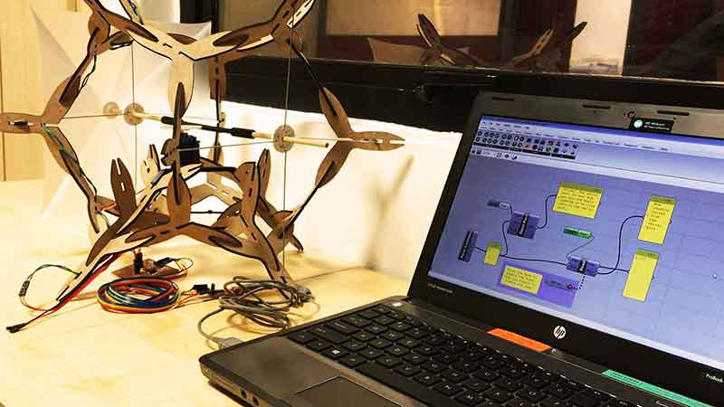
6. Installation
Assembling the entire model too place progressively as the parts were milled and printed several times at different stages during the pass 3 weeks. The process includes test printing and taking measurements for accuracy. Below is an illustration of all the 3D printed parts assembled and photos showing the actual printed parts. The installation also took into account of what was suggested during the final presentation to ensure that all wires and boards were properly contained within the model.
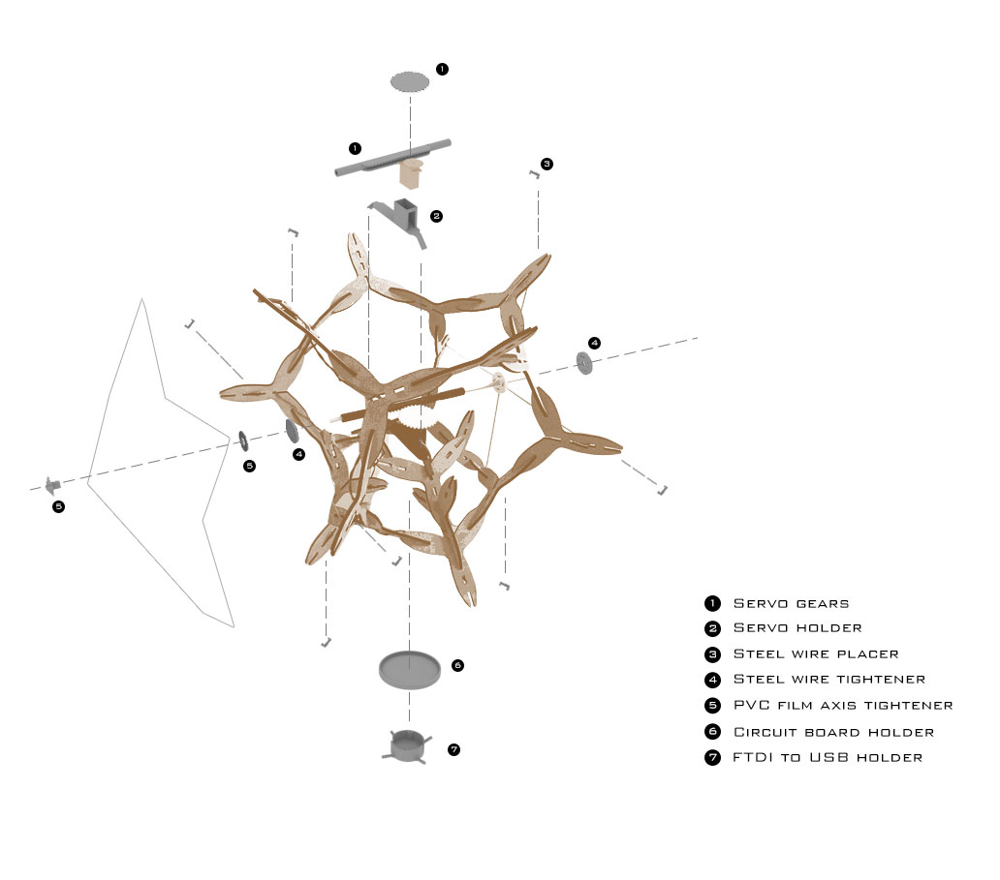
Reflection
Nothing beats the feeling of completing an intensive course like Fab Academy. The sense of achievement is overwhelming and we are all excited to attend the graduation ceremony and the conference at FAB12 Shenzhen. Before loosing the momentum, here are some of the learning points during the last 3 weeks:
-
Press-fit Design:
- Consider wider torlence
- Design should incorporate seamless housing of wires and electronics
-
Computer Controlled Cutting:
- Do lots of trials before actual cutting
- MDF tends to warp under humid condition. Install the parts while it's dry.
-
Electronics:
- Double check pins using pighixxx before cutting board
- Consider incorporating board design as part of the module design. Board can take on shape of module perhaps.
-
Programming:
- Seek help earlier
- Incorporate programming in the weekly assignments to avoid last minute rush. Do the try outs early.
-
Schedule:
Initial plan (refer to schedule on Week 17) was to ensure completion of project within a 3 weeks time frame. It comprises of electronics for the first week, model assemblage for the second and finally improvements and final touch-ups. Here are some thoughts on the process.
- PCB miller was out-of-order during first week and schedule for model assemblage was shifted from second week to first. This was proven to be more effective as the model was able to be assembled earlier and time available for detailed measurements of parts and testing general strength of joints.
- Generally the schedule became more like a guide as the processes were shifted according to needs and availablity of machines. To improve, perhaps the schedule could have been planned as cluster of days instead of weekly basis.
- Looking back, the best condition for a more successful project would definitely be one that has been planned since day 1 of Fabacademy. Having mentioned that, we do agree that the concept for the final project would naturally be derived at a later stage but if given a chance to turn back time, this decision would have gone a long way. Perhaps this lesson would be a great deal for the forthcoming team taking on Fabacademy 2017 and beyond!
-
As for the kinetic facade installation, the project worked out pretty well, touching on
various aspects from design to a construction kit for an architectural installation. A
way to look forward in this area of study would perhaps be introducing more experimentations
on other kinetic mechanisms like stepper-motors or nitinol memory wires.
- There's one thing that I personally look forward is to establish a community that "dreams", "makes" and having "fun" . Something that greatly lacks in this part of the world where efficiency and productivity reigns. Internally within Singapore Polytechnic, I am honored to be part of the FabLab team and excited to dream about the possibilities we can "make" together as one body!
All-in-all, it's been a great journey and great joy completing the project, the presentations and the Fab Academy. Looking forward in venturing into more projects in the near future and to build up a community of dreamers, makers and fun lovers!